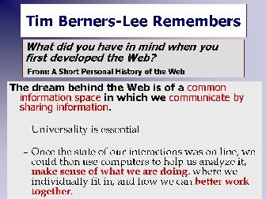

Tim Berners-Lee Remembers
When asked what he was thinking when he first developed the Web, Tim Berners-Lee talks about a common information space.

[D]Take a minute to read what Tim Berners-Lee has written about developing the Web and why.Notice, it is all about communication.
http://www.w3.org/People/Berners-Lee/ShortHistory